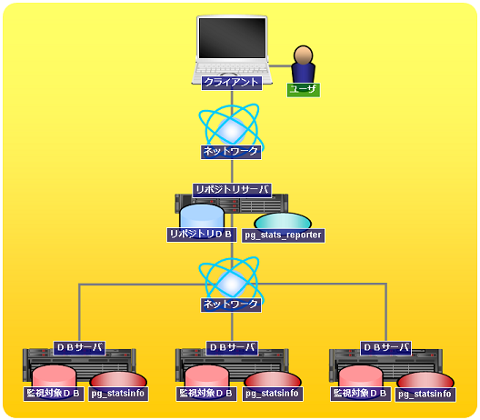
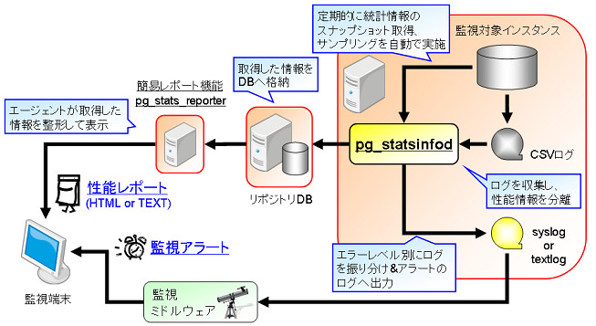

PostgreSQL サーバの利用統計情報を定期的に収集・蓄積することで、DB設計やPostgreSQLの運用(日々の処理傾向の把握、
性能劣化などの兆候や問題発生時の原因の把握等)に役立つツールです。
起動や終了、パラメータの設定は PostgreSQL と密に連携しており、手間をかけずに導入可能です。
pg_statsinfo 2.4 からの変更点はこちらをご覧ください。
pg_statsinfo は、PostgreSQL サーバの統計情報や活動状況を一定の時間間隔毎に定期的に収集し蓄積する機能と、 PostgreSQL の出力するサーバログを解析することでSQLの性能情報を取得する機能やログ出力を加工する機能があります。 また、蓄積した情報を元にテキスト形式のレポートを出力するコマンドを提供します。
また、pg_statsinfo で収集した情報は pg_stats_reporter を用いることでグラフィカルな形で解析・出力することがきます。
pg_statsinfo のシステム構成例と動作概要のイメージ図を以下に示します。

図1: システム構成例

図2: 動作概要イメージ
統計情報は一定の時間間隔で取得され、リポジトリ・データベース (以下 リポジトリDB) に保存されます。 統計情報は各インスタンスのデータベースクラスタ単位で取得できます。 リポジトリDBは、監視対象インスタンスと同一インスタンスのデータベースでも、別インスタンスでも設定可能です。 また、1つのリポジトリDBに対して複数の監視対象インスタンスの統計情報を格納することもできます。 なお 以降では pg_statsinfo で取得した統計情報を、スナップショットと定義します。
スナップショットとして以下の統計情報を収集します。
スナップショットのサイズは、DB内のオブジェクト数に依存しますが、概ね1回のスナップショットで1DBあたり600 - 800KBを消費します。 デフォルトの取得間隔(10分間隔)の場合、監視対象インスタンス一つあたり1日で90 - 120MBを消費します。
リポジトリDBのテーブル構成に関しては、「pg_statsinfo v2.5 リポジトリDB構成」を参照してください。
監視対象インスタンスの状態を定期的 (スナップショット取得時) にチェックし、問題を検知した場合にアラートメッセージをサーバログに出力します。
アラートメッセージは、メッセージレベル"ALERT"で出力されます。
アラート機能で判定する項目は以下のとおりです。
監視対象インスタンス毎に、アラート機能の有効／無効とアラート条件(閾値)を設定することができます。
(注1) テーブルの断片化率は、クラスタ化テーブル(クラスタインデックスが存在するテーブル)を対象に判定が行われます。
アラート機能の設定方法はこちらをご覧ください。
コマンドライン機能はレポート生成および運用管理を行うためのコマンドを提供します。
※コマンドライン機能の使用方法はこちらをご覧ください。
リポジトリDBに保存されたスナップショットから任意の期間のレポートをテキスト形式で出力するコマンドを提供します。
また、レポートの出力以外に以下の操作を行うことができます。
簡易レポート機能が出力するレポートの項目については「pg_statsinfo v2.5 レポート項目一覧」をご覧ください。
なお、簡易レポート機能が出力するレポートの項目は pg_stats_reporter と同等です。
グラフを用いたグラフィカルなレポートを出力したい場合は pg_stats_reporter を使用してください。
pg_statsinfo の運用管理向けの操作を行うコマンドを提供します。
運用管理機能で行うことができる操作は以下のとおりです。
1日1回、任意の時刻に下記のメンテナンス操作を行うことができます。
本機能はデフォルトは ON であり、上記の操作を自動メンテナンス実行時刻に実行します。
(注1) スナップショットの自動削除が停止している場合、古いスナップショットは自動的に削除されません。必要に応じてユーザ操作で定期的に削除してください。
(注2) ログファイルの自動整理が停止している場合、古いログファイルは自動的には削除されません。必要に応じてユーザ操作で定期的に削除してください。
自動メンテナンス機能の使用方法はこちらをご覧ください。
pg_statsinfo のインストール方法について説明します。各インストールパッケージはこちらからダウンロードして下さい。
(注1) リポジトリDBの PostgreSQL は、configureオプションに --with-libxml が指定されたビルドである必要があります。 (RPM版の PostgreSQL には --with-libxml が指定されています)
$ su # rpm -ivh pg_statsinfo-2.5.0-1.pg92.rhel6.x86_64.rpm
ソースコードからビルドするには、pgxs を使用します。 なお、pg_statsinfo の登録スクリプト (sql) を手動でインストールする必要はありません。 監視対象インスタンス、リポジトリDB共に、初回起動時に必要に応じて エージェントがスキーマを自動的にインストールします。
$ tar xzvf pg_statsinfo-2.5.0.tar.gz $ cd pg_statsinfo-2.5.0 $ make USE_PGXS=1 $ su # make USE_PGXS=1 installpgxsを使用しない場合、contrib配下にpg_statsinfoのフォルダを配置し、make, make installを実施してください。
contrib/pg_statsinfo.sql、contrib/pg_statsrepo.sqlは自動的にインストールされるため、手動での実行は不要です。
監視対象の PostgreSQL インスタンスを停止した状態で、postgresql.conf に以下の設定を行います。 この設定では、スナップショットの保存先は同一インスタンスの postgres データベースになります。 これら以外の設定については、設定ファイルを参照して下さい。
#最小設定 shared_preload_libraries = 'pg_statsinfo' # 事前ロードを行う log_filename = 'postgresql-%Y-%m-%d_%H%M%S.log' # ログファイル名を指定する
#推奨設定 shared_preload_libraries = 'pg_statsinfo' # 事前ロードを行う custom_variable_classes = 'pg_statsinfo' # 独自変数クラス名を使用するための設定 (PostgreSQL 9.2以降では不要です) pg_statsinfo.snapshot_interval = 30min # スナップショットの取得間隔 pg_statsinfo.enable_maintenance = 'on' # 自動メンテナンス設定 pg_statsinfo.maintenance_time = '00:02:00' # 自動メンテナンス実行時刻設定 pg_statsinfo.repository_keepday = 7 # スナップショットの保持期間設定 log_filename = 'postgresql-%Y-%m-%d_%H%M%S.log' # ログファイル名を指定する log_min_messages = 'log' # ログへ出力するメッセージレベル。 pg_statsinfo.syslog_min_messages = 'error' # syslogに出力するログレベルを指定する。 pg_statsinfo.textlog_line_prefix = '%t %p %c-%l %x %q(%u, %d, %r, %a) ' # pg_statsinfoがテキストログに出力する際、各行の先頭に追加される書式を指定する。log_line_prefixと同じ形式で指定する。 pg_statsinfo.syslog_line_prefix = '%t %p %c-%l %x %q(%u, %d, %r, %a) ' # pg_statsinfoがsyslog経由でログを出力する際、各行の先頭に追加される書式を指定する。 track_functions = 'all' # ストアドプロシージャの呼び出しに関する統計情報を収集する log_checkpoints = on # チェックポイントを記録 log_autovacuum_min_duration = 0 # 自動バキュームを記録 #pg_statsinfo.long_lock_threashold = 30s # ロック競合情報に記録する対象の条件(閾値)を指定する
pg_statsinfo は以下の設定を強制的に上書きすることに注意してください。
PostgreSQL 起動ユーザでの localhost からのアクセスではパスワードの入力が不要になるよう設定します。 この際の認証には ident 方式を推奨します。 一般的によく利用される「OSユーザ名 = DB管理者名 = postgres」の場合には、pg_hba.conf に以下を追加します。 他の認証方式よりも優先するため、ファイルの最初のほうに書く必要があることに注意してください。 UNIX 環境では TYPE=local の ident 認証を使うのが手軽です。
# TYPE DATABASE USER CIDR-ADDRESS METHOD [for UNIX] local all postgres ident
PostgreSQL のバージョン 8.4 以上を使っている場合、監視対象インスタンスの postgres データベースに pg_stat_statements をインストールすることで、クエリの統計情報もスナップショットとして収集できるようになります。
利用する場合には、postgresql.conf の shared_preload_libraries に pg_stat_statements を追加し、初回起動時に以下の手順で登録してください。
# PostgreSQL のバージョンが 9.1 以降の場合 $ psql -d postgres -c "CREATE EXTENSION pg_stat_statements" # PostgreSQL のバージョンが 9.0 以前の場合 $ psql -d postgres -f $PGSHARE/contrib/pg_stat_statements.sql
また、必要に応じて設定ファイルに下記のパラメータを設定してください。
上記のパラメータの説明は設定ファイルをご覧ください。
以上でインストールは終了です。
pg_statsinfo の操作方法と各種設定について説明します。
起動は、通常どおりPostgreSQLを起動するだけです。 PostgreSQL の起動と連動して エージェントが自動的に起動します。 エージェント単体で起動することはできません。
$ pg_ctl start [OPTIONS]
終了も同様に、PostgresSQL サーバの終了に連動します。 smart 以外の終了モード (fast, immediate) ではサーバログにエラーが出力される場合がありますが、正常な動作です。
$ pg_ctl stop -m smart [OPTIONS]
また、PostgreSQL サーバを終了せずに エージェントのみを停止するには以下のコマンドを実行します。
$ pg_statsinfo --stop [OPTIONS]
停止中のエージェントを起動するには以下のコマンドを実行します。
$ pg_statsinfo --start [OPTIONS]
(注1) PostgreSQLの設定パラメータに「shared_preload_libraries = 'pg_statsinfo'」が設定されていない場合は、エージェントの停止／起動が実行できません。
スナップショットを一定の時間間隔で定期的に取得します。postgresql.confに以下の設定を記述することで自動取得を実行できます。
例: スナップショットの取得間隔を30分に設定する。
pg_statsinfo.snapshot_interval = 30min
任意のタイミングでスナップショットを取得する場合は、監視対象のインスタンスが存在するDBクラスタのpostgresデータベースに対し、関数 statsinfo.snapshot(text DEFAULT NULL) を実行して下さい。
引数でスナップショット取得理由をコメントとして記録できます。
例: 手動でスナップショットを取得します。コメントとして文字列 'comment' を付与します。
$ psql -d postgres -c "SELECT statsinfo.snapshot('comment')"
自動メンテナンス機能を使用することで保持期間を経過したスナップショット削除を自動的に削除することができます。
自動メンテナンスのスナップショット削除はデフォルトが ON となっています。
自動メンテナンス機能の使い方はこちらをご覧ください。
スナップショットの手動削除は監視対象インスタンスに対して、関数 statsinfo.maintenance(timestamptz) を実行して下さい。 引数で指定した時刻より古いスナップショットが削除されます。
例: 取得日時が 2011-02-01 07:00:00 より古いスナップショットを削除します。
$ psql -d postgres -c "SELECT statsinfo.maintenance('2010-02-01 07:00:00'::timestamptz);"
pg_statsinfo には PostgreSQL のサーバログをフィルタリングにより加工する機能があります。
以下では、出力されるログファイルの種類とフィルタリングの種類を説明します。
pg_statsinfo.textlog_min_messages = warning
pg_statsinfo.textlog_nologging_users = 'postgres'
pg_statsinfo.adjust_log_level = on pg_statsinfo.adjust_log_info = '42P01'
自動メンテナンス機能を使用することでログファイルの整理を行うことができます。
自動メンテナンスのログファイル整理はデフォルトが ON となっています。
自動メンテナンス機能の使い方はこちらをご覧ください。
アラート機能は初回スナップショットが完了した監視対象インスタンスに対して自動的に有効になります。
初期状態のアラート条件(閾値)は、アラート設定テーブルのデフォルト値が適用されます。
監視対象インスタンス毎に、アラート機能の有効／無効およびアラート条件(閾値)を変更することができます。
また、アラート条件(閾値)を「-1」に設定することで一部のアラート項目のみ無効とすることができます。
アラート設定を変更するには、アラート設定テーブルから変更したいアラート項目のカラムの値を変更してください。
なお、アラート設定の変更を行うには、アラート設定を変更する監視対象インスタンスの初回スナップショットが完了している必要があることに注意してください。
アラート設定を変更する際、監視対象インスタンスを選択するためにカラム「instid」を使用します。
当該カラムには監視対象インスタンス毎に割り当てられた識別子 (監視対象インスタンスID) を指定します。
監視対象インスタンスIDは、簡易レポート機能でスナップショットサイズ表示を実行することで確認できます。
# UPDATE statsrepo.alert SET rollback_tps = 3000 WHERE instid = <変更対象の監視対象インスタンスID>設定例: 秒間ロールバック数のアラートを無効にする場合
# UPDATE statsrepo.alert SET rollback_tps = -1 WHERE instid = <変更対象の監視対象インスタンスID>設定例: アラート機能を無効にする場合
# UPDATE statsrepo.alert SET enable_alert = false WHERE instid = <変更対象の監視対象インスタンスID>
アラート設定テーブルとはアラート機能の有効／無効および各種アラート条件(閾値)の設定を保存するテーブルです。
アラート設定テーブルは、リポジトリDBの「statsrepo.alert」テーブルです。
アラート設定テーブルのスキーマ構成は以下のとおりです。
| カラム名 | データ型 | デフォルト値 | 説明 |
|---|---|---|---|
| instid | bigint | － | 監視対象インスタンスID |
| rollback_tps | bigint | 100 | 秒間のロールバック数 |
| commit_tps | bigint | 1000 | 秒間のコミット数 |
| garbage_size | bigint | 20000 | 監視インスタンス中の不要領域のサイズ(MB) |
| garbage_percent | integer | 30 | 監視インスタンスに占める不要領域の割合(%) |
| garbage_percent_table | integer | 30 | 各テーブルに占める不要領域の割合(%) |
| response_avg | bigint | 10 | クエリの平均レスポンス時間(秒) |
| response_worst | bigint | 60 | クエリの最長レスポンス時間(秒) |
| fragment_percent | integer | 70 | 各テーブルの断片化率(correlation)(%) |
| backend_max | integer | 100 | バックエンドの最大数 |
| disk_remain_percent | integer | 20 | テーブルスペースのディスク空き容量の割合(%) |
| loadavg_1min | real | 7.0 | 過去1分間のロードアベレージ |
| loadavg_5min | real | 6.0 | 過去5分間のロードアベレージ |
| loadavg_15min | real | 5.0 | 過去15分間のロードアベレージ |
| swap_size | integer | 1000000 | スワップ使用量(KB) |
| rep_flush_delay | integer | 100 | マスタとスタンバイ間のWAL書き込み遅延量(MB) |
| rep_replay_delay | integer | 200 | スタンバイのリカバリ遅延量(MB) |
| enable_alert | boolean | true | アラート対象判定フラグ(TRUE: 有効、FALSE: 無効) |
アラート設定テーブルのタプルを削除しないでください。
タプルを削除した場合、削除したタプルに該当する監視対象インスタンスの設定ができなくなります。
$ pg_statsinfo -r REPORTID [-i INSTANCEID] [-b SNAPID] [-e SNAPID] [-B DATE] [-E DATE] [-o FILENAME] [connection-options]
以下にコマンド例を示します。
以下のコマンド例では、ホスト名 localhost 上のポート 5432 で稼動しているリポジトリDBに対して、postgres データベースに、postgres ユーザで接続し、以下の条件のレポートを出力します。
$ pg_statsinfo -r All -h localhost -d postgres -p 5432 -U postgres
$ pg_statsinfo -l [-i INSTANCEID] [connection-options]
以下にコマンド例を示します。
以下のコマンド例では、ホスト名 localhost 上のポート 5432 で稼動しているリポジトリDBに対して、postgres データベースに、postgres ユーザで接続し、当該リポジトリDBに蓄積されているスナップショットの一覧を表示します。
$ pg_statsinfo -l -h localhost -d postgres -p 5432 -U postgres
$ pg_statsinfo -s [connection-options]
以下にコマンド例を示します。
以下のコマンド例では、ホスト名 localhost 上のポート 5432 で稼動しているリポジトリDBに対して、postgres データベースに、postgres ユーザで接続し、当該リポジトリDBに蓄積されているスナップショットのサイズを表示します。
$ pg_statsinfo -s -h localhost -d postgres -p 5432 -U postgres
$ pg_statsinfo -S COMMENT [connection-options]
以下にコマンド例を示します。
以下のコマンド例では、ホスト名 localhost 上のポート 5432 で稼動している監視対象インスタンスに対して、postgres データベースに、postgres ユーザで接続し、'COMMENT'をコメントとして付与したスナップショットを取得します。
$ pg_statsinfo -S 'COMMENT' -h localhost -d postgres -p 5432 -U postgres
$ pg_statsinfo -D SNAPID [connection-options]
以下にコマンド例を示します。
以下のコマンド例では、ホスト名 localhost 上のポート 5432 で稼動しているリポジトリDBに対して、postgres データベースに、postgres ユーザで接続し、当該リポジトリDBに蓄積されているスナップショットIDが 123 のスナップショットを削除します。
$ pg_statsinfo -D 123 -h localhost -d postgres -p 5432 -U postgres
$ pg_statsinfo --stop [connection-options]
以下にコマンド例を示します。
以下のコマンド例では、ホスト名 localhost 上のポート 5432 で稼動している監視対象インスタンスに対して、postgres データベースに、postgres ユーザで接続し、エージェントを停止します。
$ pg_statsinfo --stop -h localhost -d postgres -p 5432 -U postgres
$ pg_statsinfo --start [connection-options]
以下にコマンド例を示します。
以下のコマンド例では、ホスト名 localhost 上のポート 5432 で稼動している監視対象インスタンスに対して、postgres データベースに、postgres ユーザで接続し、エージェントを起動します。
$ pg_statsinfo --start -h localhost -d postgres -p 5432 -U postgres
データベース接続に関するオプションです。
スナップショット取得を実行する場合は監視対象インスタンス、それ以外はリポジトリDBへの接続情報を指定します。
自動メンテナンスのスナップショット削除を有効にすると、1日1回任意の時刻に古いスナップショットを自動的に削除することができます。
自動メンテナンスのスナップショット削除を有効にするには、設定ファイル(postgresql.conf)に以下の設定を記述します。
例: 毎日0時2分に7日間の保持期間を過ぎたスナップショットを自動削除する
pg_statsinfo.enable_maintenance = 'snapshot' # 自動メンテナンス設定 pg_statsinfo.maintenance_time = '00:02:00' # 自動メンテナンス実行時刻設定 pg_statsinfo.repository_keepday = 7 # スナップショットの保持期間設定
(注1) 自動メンテナンスのスナップショット削除はデフォルトで有効となっています。
(注2) 自動メンテナンスのログファイル整理と併せて使用する場合は自動メンテナンス設定を 'on' に設定するかカンマ区切りで 'log' を追記してください。
(注3) 自動メンテナンスでスナップショット削除を行わない場合、スナップショットは手動で削除しない限りリポジトリDBに残り続けます。 不要となった古いスナップショットは定期的に削除して下さい。
(注4) 複数監視対象インスタンス－単一リポジトリDBの構成で、各監視対象インスタンスのスナップショットの保持期間を 互いに異なる期間に設定した場合、自動メンテナンス実行時には最も短く設定した期間のスナップショットが保持されます。 例えば、各監視対象インスタンスの postgresql.conf に以下のようにスナップショット保持期間(pg_statsinfo.repository_keepday)の 設定を記述した場合、自動メンテナンス実行時のスナップショット保持期間として反映されるのは監視対象インスタンス3の設定となります。
<監視対象インスタンス1> pg_statsinfo.enable_maintenance = 'snapshot' pg_statsinfo.repository_keepday = 7 <監視対象インスタンス2> pg_statsinfo.enable_maintenance = 'snapshot' pg_statsinfo.repository_keepday = 5 <監視対象インスタンス3> pg_statsinfo.enable_maintenance = 'snapshot' pg_statsinfo.repository_keepday = 3
自動メンテナンスのログファイル整理を有効にすると、1日1回任意の時刻にサーバログの整理を行うための任意のシェルコマンドを実行することができます。
自動メンテナンスのログファイル整理を有効にするには、設定ファイル(postgresql.conf)に以下の設定を記述します。
例: 毎日0時2分に前日以前のCSVログファイルを圧縮アーカイブする
pg_statsinfo.enable_maintenance = 'log' # 自動メンテナンス設定 pg_statsinfo.maintenance_time = '00:02:00' # 自動メンテナンス実行時刻設定 pg_statsinfo.log_maintenance_command = '<PGHOME>/bin/archive_pglog.sh %l' # ログファイル整理コマンド設定 (*1) ※<PGHOME>: PostgreSQL インストールディレクトリ (*1) archive_pglog.sh archive_pglog.sh は同梱されるシェルスクリプトです。 前日以前のCSVログファイルを圧縮アーカイブし、ログファイル格納ディレクトリ配下にアーカイブファイル(TGZ)を作成します。 また、アーカイブしたCSVログファイルをログファイル格納ディレクトリから削除します。
(注1) 自動メンテナンスのログファイル整理はデフォルトで有効となっています。
(注2) 自動メンテナンスのスナップショット削除と併せて使用する場合は自動メンテナンス設定を 'on' に設定するかカンマ区切りで 'snapshot' を追記してください。
(注3) ログファイル整理コマンドの設定を省略した場合、上記の例と同じコマンドが適用されます。
pg_statsinfo は設定ファイルとして監視対象インスタンスの postgresql.conf を使用します。 設定ファイルに記載した内容は、インスタンス起動時とリロード時 (pg_ctl reload) に読み込まれ、動作に反映されます。
pg_statsinfo を利用するために必須のパラメータは以下です。 パラメータを後から変更するためには PostgreSQL インスタンスの再起動が必要な設定もあります。
| 設定項目 | 設定値 | 説明 |
|---|---|---|
| shared_preload_libraries | 'pg_statsinfo' | 事前読込み用のライブラリの指定。 pg_stat_statements を併用する場合は 'pg_statsinfo, pg_stat_statements' のようにカンマ区切りで指定します。 |
| log_filename | 'postgresql-%Y-%m-%d_%H%M%S.log' | CSVログおよびテキストログのファイル名。デフォルトから変更する場合でも、%Y, %m, %d, %H, %M, %S がこの順に全て表れる形式でなければなりません。 |
| track_counts | on | データベースの活動に関する統計情報の収集設定 |
| track_activities | on | セッションで実行中のコマンドに関する情報の収集設定 |
| log_min_messages | debug5 ~ log | ログへ出力するメッセージレベル。 'log', pg_statsinfo.syslog_min_messages, pg_statsinfo.textlog_min_messages のいずれの設定よりも、より多くを出力するレベルを設定する必要があります。 |
| log_timezone | unknown, gmt, utc | これ以外の値には対応していません。 |
| log_destination | 'csvlog' 必須 / 'syslog', 'eventlog' を追加可能 | 他の値であっても、エージェント起動時に強制的に 'csvlog' が追加され、'stderr' は除去されます。 |
| logging_collector | on | 他の値であっても、エージェント起動時に強制的にこの値に設定されます。 |
pg_statsinfo を利用するために確認が推奨されるパラメータは以下です。
パラメータを後から変更するためには、設定値のリロード (pg_ctl reload) が必要です。
なお、PostgreSQL 8.3 で利用する場合には、custom_variable_classes の設定値は 'statsinfo'、独自パラメータ 'pg_statsinfo.*' は 'statsinfo.*' と読み替えてください。
| 設定項目 | デフォルト値 | 説明 |
|---|---|---|
| track_functions | none | 関数の呼び出しに関する統計情報の収集設定。 統計情報を収集するためには pl または all を設定します。 |
| track_io_timing | off | ブロックの読み込みと書き込み時間に関する統計情報の収集設定。
ブロックの読み書きに関する統計情報を収集する場合は on を設定します。 本パラメータを on に設定した場合、現時点の時刻をオペレーティングシステムに繰り返し問い合わせるので、プラットフォームによっては深刻な負荷の原因になる可能性がある点を留意してください。 (本パラメータはPostgreSQL 9.2以降から指定可能です) |
| log_checkpoints | off | チェックポイント状況のサーバログ出力。on を推奨します。 |
| log_autovacuum_min_duration | -1 | 自動バキューム状況のサーバログ出力。0 ~ 1min を推奨します。 |
| log_directory | 'pg_log' | CSVログおよびテキストログの出力先ディレクトリ |
| log_rotation_age | 1d | ログローテート設定 (期間によるログファイル切替) |
| log_rotation_size | 10MB | ログローテート設定 (容量によるログファイル切替) |
| syslog_facility | 'LOCAL0' | syslog の facility 指定 |
| syslog_ident | 'postgres' | syslog の indent文字列指定 |
| custom_variable_classes | (空文字) | 独自変数クラス名の設定。 PostgreSQL 8.3で利用する場合は 'statsinfo' を指定してください。 PostgreSQL 8.4 ～ 9.1 で利用する場合には 'pg_statsinfo' を指定してください。 PostgreSQL 9.2以降で利用する場合は当パラメータの設定は不要です。 |
| pg_statsinfo.textlog_min_messages | warning | テキストログへ出力する最小メッセージレベル (*1) |
| pg_statsinfo.syslog_min_messages | disable | syslog へ出力する最小メッセージレベル (*1)。 |
| pg_statsinfo.textlog_filename | 'postgresql.log' | 最新のテキストログファイル名。空文字はエラー。 |
| pg_statsinfo.textlog_line_prefix | '%t %p ' | テキストログの各行の先頭に追加される書式 (*2) |
| pg_statsinfo.syslog_line_prefix | '%t %p ' | syslog の各行の先頭に追加される書式 (*2). syslog がデフォルトで付与する時刻とプロセスIDは、エージェントのものに置き換わってしまうため、元の値を記録するために %t や %p が必要なことに注意してください。 |
| pg_statsinfo.textlog_permission | 0600 | テキストログファイルのパーミッション指定 |
| pg_statsinfo.textlog_nologging_users | - | テキストログのフィルタリング設定。テキストログへの出力を除外するユーザを設定します。複数のユーザを設定する場合はカンマ区切りで指定します。 |
| pg_statsinfo.sampling_interval | 5s | サンプリングの実行間隔 (*3) |
| pg_statsinfo.snapshot_interval | 10min | スナップショットの取得間隔 (*3) |
| pg_statsinfo.excluded_dbnames | 'template0, template1' | 監視対象から除外するデータベース名 |
| pg_statsinfo.excluded_schemas | 'pg_catalog, pg_toast, information_schema' | 監視対象から除外するスキーマ名 |
| pg_statsinfo.repository_server | 'dbname=postgres' | リポジトリDBへの接続文字列 (*4)。パスワードの入力待ちは避ける。 |
| pg_statsinfo.adjust_log_level | off | サーバログのメッセージレベル変更設定 |
| pg_statsinfo.adjust_log_info | - | メッセージレベルを INFO に変更したい SQLSTATE 指定 (*5) |
| pg_statsinfo.adjust_log_notice | - | メッセージレベルを NOTICE に変更したい SQLSTATE 指定 (*5) |
| pg_statsinfo.adjust_log_warning | - | メッセージレベルを WARNING に変更したい SQLSTATE 指定 (*5) |
| pg_statsinfo.adjust_log_error | - | メッセージレベルを ERROR に変更したい SQLSTATE 指定 (*5) |
| pg_statsinfo.adjust_log_log | - | メッセージレベルを LOG に変更したい SQLSTATE 指定 (*5) |
| pg_statsinfo.adjust_log_fatal | - | メッセージレベルを FATAL に変更したい SQLSTATE 指定 (*5) |
| pg_statsinfo.enable_maintenance | 'on' | 自動メンテナンス設定。自動メンテナンスで実行する操作を以下より選択します。
|
| pg_statsinfo.maintenance_time | '00:02:00' | 自動メンテナンス実行時刻設定 |
| pg_statsinfo.repository_keepday | 7 | スナップショットの保持期間設定 |
| pg_statsinfo.log_maintenance_command | <PGHOME>/bin/archive_pglog.sh %l | サーバログのログファイルの整理を実行するシェルコマンドを指定します。文字列内に'%l'を記述した場合は'%l'がログファイル格納ディレクトリの絶対パスに置き換わります。シェルコマンドは正常にコマンドが終了した場合にのみ正常終了値(0)を返してください。 |
| pg_statsinfo.long_lock_threashold | 30s | ロック競合情報の収集対象とする条件(閾値)。スナップショットの時点で発生しているロック競合の内、ロック待ちの経過時間(秒)が閾値を越えているものが収集対象となります。 |
| pg_statsinfo.stat_statements_max | 30 | pg_stat_statementsで収集する情報数の上限 |
| pg_statsinfo.stat_statements_exclude_users | - | pg_stat_statementsで収集する情報のフィルタリング設定。収集対象から除外するユーザを設定します。複数のユーザを設定する場合はカンマ区切りで指定します。 |
PostgreSQLサーバを終了させることなく postgresql.conf の設定を反映させたい場合は、PostgresSQLのリロードコマンドを実行します。
$ pg_ctl reload
ユーザが行う必要のある操作と運用上必要となる作業について説明します。
不要となった古いログファイル(CSVログ、テキストログ)は定期的に削除して下さい。
不要となったログファイルの削除は手動で行うか、自動メンテナンスのログファイル整理を利用して下さい。
任意のタイミングでログをローテートさせたい場合は、監視対象インスタンスにて以下を実行して下さい。
$ psql -d postgres -c "SELECT pg_rotate_logfile()"
エージェントのみが異常終了しても、PostgreSQL インスタンスには影響はありませんが、エージェントの機能は停止したままになってしまいます。
エージェントを再起動するには PostgreSQL インスタンスを再起動してください。
なお、エージェントが異常終了してから再起動するまでの間に出力されたサーバログは、再起動時に解析(サーバログの分配のみ)されます。
pg_statsinfo をアンインストールするには、PostgreSQL インスタンスの再起動が必要です。
postgresql.conf の shared_preload_libraries から pg_statsinfo を取り除き、全ての pg_statsinfo.* パラメータを削除した後に、PostgreSQL を再起動して下さい。
その後、監視対象インスタンスにインストールされた pg_statsinfo が使用するオブジェクトを削除します。監視対象インスタンスの postgres データベースに対し $PGSHARE/contrib/uninstall_pg_statsinfo.sql を実行して下さい。
$ psql -d postgres -f $PGSHARE/contrib/uninstall_pg_statsinfo.sql
取得済みのスナップショットも不要な場合には、リポジトリDBに接続し、$PGSHARE/contrib/uninstall_pg_statsrepo.sql を実行して下さい。 この操作ではリポジトリDBに蓄積した全てのスナップショットを削除しますので、リポジトリDBを共有している場合には特に注意して下さい。
$ psql -d <repository> -f $PGSHARE/contrib/uninstall_pg_statsrepo.sql
pg_statsinfo を使用する際には、以下の使用上の注意と制約があります。
pg_statsinfo が取得した情報は、statsrepo スキーマに格納されています。 コマンドライン上で以下の SQL を実行し、確認することができます。
$psql -d postgres -c "SELECT statsinfo.snapshot('test')"
$psql -d postgres -c "SELECT * FROM statsrepo.snapshot WHERE COMMENT = 'test'"
2回目のコマンドで、テスト実行した snapshot の情報が確認されれば、正常に動作しています。
pg_statsinfo の統計情報の取得機能は、その時点の統計情報をスナップショットとして定期的に取得する機能のみになります。 取得した統計情報から、有益な情報を見たい場合は 簡易レポート機能 を利用するか、pg_stats_reporter をお使いください。
自動メンテナンスの設定が有効になっていないことが考えられます。 以下の事項を点検してください。
アラート機能を有効に設定、かつ秒間コミット数のアラート条件(閾値)を「0」に設定した状態でスナップショットを取得してください。
スナップショットの取得時に、サーバログにアラートメッセージが出力されていればアラート機能が正常に動作しています。
アラート機能を有効、かつ秒間のコミット数のアラート条件(閾値)を「0」に設定するには以下の SQL をリポジトリDBに対して実行します。
# UPDATE statsrepo.alert SET enable_alert = true, commit_tps = 0;
アラート機能が正常に動作したことを確認した後は、秒間のコミット数のアラート条件(閾値)を元に戻してください。
古いバージョンをアンインストールした後、新しいバージョンをインストールしてください。
また、古いバージョンで取得済みのスナップショットは新しいバージョンでは利用できません。
アンインストール の手順に従い、リポジトリDBのスナップショットを全て削除してください。
上記の操作を行った後、監視対象インスタンスを再起動してください。
リポジトリDBに格納されているスナップショットの件数が2件未満である可能性があります。
レポートの作成には2件以上のスナップショットが必要となりますので、スナップショットの取得が2回実行されるのを待ってからレポート生成を実行してください。
pg_statsinfo 2.4 からの変更点は以下の通りです。
より高度な利用方法や、内部構成について説明します。
複数の監視対象インスタンスが存在する場合の構成として、監視対象インスタンス毎にリポジトリDBを用意して各個にスナップショットを蓄積する構成と、各監視対象インスタンスで共通のリポジトリDBを用意してスナップショットを蓄積する構成があります。
ここでは、後者の単一リポジトリに複数の監視対象インスタンスのスナップショットを蓄積する構成について説明します。
各監視対象インスタンスの設定ファイルに、同一のリポジトリDBを参照する内容で「pg_statsinfo.repository_server」を設定します。
以下に設定例を示します。
pg_statsinfo.repository_server = 'host=192.168.0.32 port=5432 user=postgres dbname=postgres'
リポジトリDBは各監視対象インスタンスから上記で設定したデータベースにパスワード入力なしに接続できる必要があります。
各監視対象インスタンスからリポジトリDBにパスワード入力なしに接続できるよう クライアント認証 を設定してください。
構成例として、ウォームスタンバイでの構成を説明します。 ウォームスタンバイ構成で pg_statsinfo を利用する場合、大きく分けて2つの構成があります。 詳細は "pg_statsinfo: warm-standby" を参照してください。
Linux 系 OS には、様々なトレーシング／プロファイリングツールが備わっています。 その内の1つである SystemTap は、Solaris や FreeBSD などで利用可能な Dtrace に類似したプロダクトであり、カーネル内部のトレーシングやプロファイリングのほかに、 ユーザアプリケーションの情報取得 (プローブ定義) も可能なツールです。 PostgreSQL には、多くの標準的なプローブがソースコード内で提供されており、SystemTap を利用してこれらのプローブから収集されるプロファイリング情報を取得することができます。 pg_statsinfo は、この SystemTap が収集するプロファイリング情報をスナップショットとしてリポジトリDBに蓄積します。
SystemTap を実行するユーザは、postgres を起動するユーザ(典型的には postgres ユーザ)である必要があります。 まず、このユーザを stapdev グループに所属させる必要があります。
$ usermod -g stapdev <username>
PostgreSQL のプロファイリング情報収集を行うには、専用のスクリプトを使用します。スクリプトを pg_statsinfo_profile.stp に示します。 スクリプトを監視対象インスタンスの任意の場所に配置し、SystemTap で実行して下さい。
$ stap -m statsinfo_prof pg_statsinfo_profile.stp
SystemTap が収集するプロファイリング情報は、スナップショット取得と同じタイミングで取得され、リポジトリDBに蓄積されます。
本機能は、性能への影響、プロダクトの成熟度合いなどを加味し、Experimental (実験的扱いの機能) の位置づけとなります。 つまり、商用などでは使用をまだ推奨せず、あくまで検証環境などでの使用を前提としています。
pg_statsinfo はPostgreSQLのサーバサイドで動作する pg_statsinfo ライブラリと、エージェントとして動作する実行プログラムの2つのモジュールで構成されています。 ライブラリはロード直後に呼ばれるフック関数からエージェントを起動するため、ユーザがエージェントを明示的に起動することはありません。 詳細は "pg_statsinfo: internal" を参照してください。